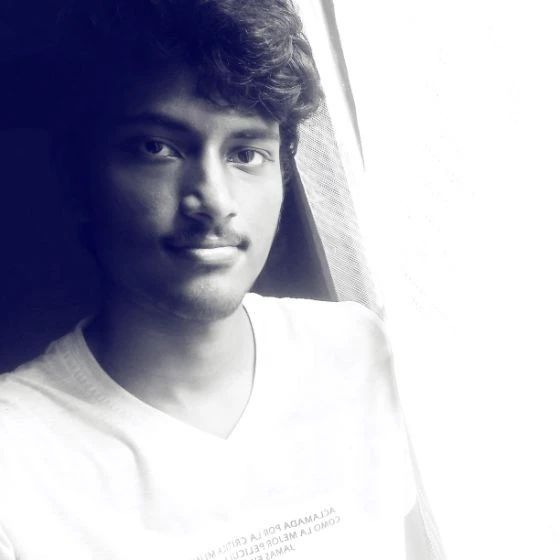

A Software Developer
building web
applications using React and TypeScript.
I’ve contributed to AI-powered platforms, financial tools, and data-driven dashboards,
with
a
focus
on creating clear, usable interfaces and simplifying complex ideas into practical
solutions.
My academic journey moves through Physics, Computer Applications, and Education (B.Ed.), bringing analytical thinking, technical expertise, and a structured understanding of teaching and learning. Over time, I’ve found myself drawn not just to building systems, but to breaking them down, making ideas accessible, connecting concepts, and helping others see what lies underneath.
I am currently preparing for UGC NET with the goal of transitioning into an academic role, continuing to stay engaged with evolving technologies.
Developing responsive, user-centric web applications and intuitive interfaces using React.js, TypeScript, and modern JavaScript.
Coordinating cross-functional workflows, managing technical programs and integrating AI tools into practical workflows.
Fusing technical expertise and formal B.Ed. training to simplify complex ideas through modern mentoring, digital tools, and proactive learning methods.
Currently operating as a freelance developer while steering my ship firmly toward academia. As I prepare for the UGC NET, my ultimate mission is to transition into full-time teaching. My goal is to bring real-world industry experience, digital tools, and modern problem-solving directly into the classroom to guide the next generation of learners.
A pivotal phase where my technical trajectory aligned with a core part of my character: the natural urge to share what I know and explain complex ideas to others. To formalize this, I earned my Bachelor of Education (B.Ed.) while staying active in the tech industry. Whether managing college-to-career apprenticeships or building AI front-ends, this era proved that software development and mentoring can perfectly orbit one another.
Wanting to step away from pure theory and dive into applied engineering, I adjusted my coordinates to pursue a Master of Computer Applications (MCA). This marked my full entry into the digital realm. I transitioned from a student to a Front-End Developer at Qantler Technologies, mastering React and learning to turn abstract logic into tangible, interactive web interfaces.
Driven by a childhood fascination with "infinity and beyond," I launched my academic journey with a Bachelor of Science in Physics at Loyola College. Exploring astrophysics and electronics certainly fed my scientific curiosity, but more importantly, it hardwired the analytical problem-solving and structural thinking that I rely on today.
A current freelance project (Jan 2026–Present) delivering an interactive financial planning tool that utilizes data-driven simulations to navigate complex scenarios.
View
An ongoing personal project building a systemic wardrobe companion designed to optimize clothing usage, plan outfits, and reduce day-to-day decision fatigue.
View
A professional project completed in 2025, featuring an AI-powered Learning Management System that offers customized portals to enhance the educational experience.
View